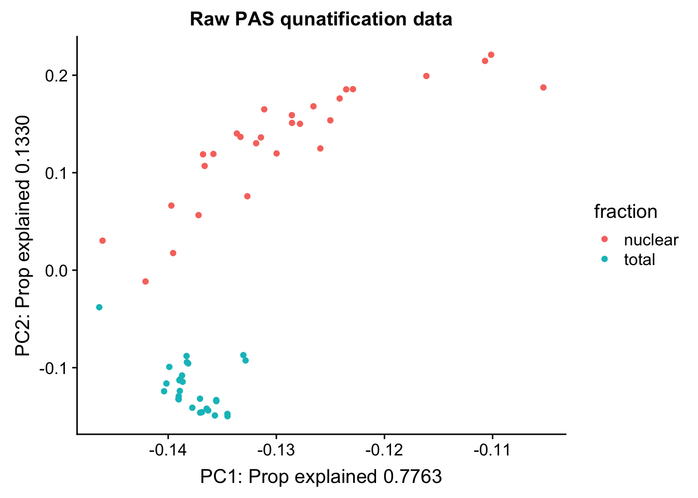

28 Ind. Peak Quant
Briana Mittleman
8/9/2018
Last updated: 2018-08-13
workflowr checks: (Click a bullet for more information)-
✔ R Markdown file: up-to-date
Great! Since the R Markdown file has been committed to the Git repository, you know the exact version of the code that produced these results.
-
✔ Environment: empty
Great job! The global environment was empty. Objects defined in the global environment can affect the analysis in your R Markdown file in unknown ways. For reproduciblity it’s best to always run the code in an empty environment.
-
✔ Seed:
set.seed(12345)The command
set.seed(12345)was run prior to running the code in the R Markdown file. Setting a seed ensures that any results that rely on randomness, e.g. subsampling or permutations, are reproducible. -
✔ Session information: recorded
Great job! Recording the operating system, R version, and package versions is critical for reproducibility.
-
Great! You are using Git for version control. Tracking code development and connecting the code version to the results is critical for reproducibility. The version displayed above was the version of the Git repository at the time these results were generated.✔ Repository version: e2ded68
Note that you need to be careful to ensure that all relevant files for the analysis have been committed to Git prior to generating the results (you can usewflow_publishorwflow_git_commit). workflowr only checks the R Markdown file, but you know if there are other scripts or data files that it depends on. Below is the status of the Git repository when the results were generated:
Note that any generated files, e.g. HTML, png, CSS, etc., are not included in this status report because it is ok for generated content to have uncommitted changes.Ignored files: Ignored: .DS_Store Ignored: .Rhistory Ignored: .Rproj.user/ Ignored: output/.DS_Store Untracked files: Untracked: analysis/snake.config.notes.Rmd Untracked: data/18486.genecov.txt Untracked: data/APApeaksYL.total.inbrain.bed Untracked: data/Totalpeaks_filtered_clean.bed Untracked: data/YL-SP-18486-T-combined-genecov.txt Untracked: data/YL-SP-18486-T_S9_R1_001-genecov.txt Untracked: data/bedgraph_peaks/ Untracked: data/bin200.5.T.nuccov.bed Untracked: data/bin200.Anuccov.bed Untracked: data/bin200.nuccov.bed Untracked: data/clean_peaks/ Untracked: data/comb_map_stats.csv Untracked: data/comb_map_stats.xlsx Untracked: data/combined_reads_mapped_three_prime_seq.csv Untracked: data/gencov.test.csv Untracked: data/gencov.test.txt Untracked: data/gencov_zero.test.csv Untracked: data/gencov_zero.test.txt Untracked: data/gene_cov/ Untracked: data/joined Untracked: data/leafcutter/ Untracked: data/merged_combined_YL-SP-threeprimeseq.bg Untracked: data/nuc6up/ Untracked: data/reads_mapped_three_prime_seq.csv Untracked: data/smash.cov.results.bed Untracked: data/smash.cov.results.csv Untracked: data/smash.cov.results.txt Untracked: data/smash_testregion/ Untracked: data/ssFC200.cov.bed Untracked: data/temp.file1 Untracked: data/temp.file2 Untracked: data/temp.gencov.test.txt Untracked: data/temp.gencov_zero.test.txt Untracked: output/picard/ Untracked: output/plots/ Untracked: output/qual.fig2.pdf Unstaged changes: Modified: analysis/cleanupdtseq.internalpriming.Rmd Modified: analysis/dif.iso.usage.leafcutter.Rmd Modified: analysis/explore.filters.Rmd Modified: analysis/peak.cov.pipeline.Rmd Modified: analysis/test.max2.Rmd Modified: code/Snakefile
Expand here to see past versions:
| File | Version | Author | Date | Message |
|---|---|---|---|---|
| Rmd | e2ded68 | brimittleman | 2018-08-13 | refseq gene |
| html | 2e06a70 | brimittleman | 2018-08-13 | Build site. |
| Rmd | 3901f7e | brimittleman | 2018-08-13 | pre and post clean peaks per gene |
| html | 38bfbaf | brimittleman | 2018-08-09 | Build site. |
| Rmd | 03761cb | brimittleman | 2018-08-09 | start peak explore analysis for 54 libraries |
I know have 28 individuals sequences on 2 lanes. I have combined these and used the peak coverage pipeline to call and clean peaks. I will use this analysis to explore the library sizes and coverage at these peaks.
library(tidyverse)── Attaching packages ────────────────────────────────── tidyverse 1.2.1 ──✔ ggplot2 3.0.0 ✔ purrr 0.2.5
✔ tibble 1.4.2 ✔ dplyr 0.7.6
✔ tidyr 0.8.1 ✔ stringr 1.3.1
✔ readr 1.1.1 ✔ forcats 0.3.0── Conflicts ───────────────────────────────────── tidyverse_conflicts() ──
✖ dplyr::filter() masks stats::filter()
✖ dplyr::lag() masks stats::lag()library(workflowr)This is workflowr version 1.1.1
Run ?workflowr for help getting startedlibrary(cowplot)
Attaching package: 'cowplot'The following object is masked from 'package:ggplot2':
ggsavelibrary(reshape2)
Attaching package: 'reshape2'The following object is masked from 'package:tidyr':
smithslibrary(devtools)Reads and Mapping Stats:
map_stats=read.csv("../data/comb_map_stats.csv", header=T)
map_stats$line=as.factor(map_stats$line)
map_stats$batch=as.factor(map_stats$batch)The number of reads for each library and the number of mapped reads.
read_plot=ggplot(map_stats, aes(x=line, y=comb_reads, fill=fraction))+ geom_bar(stat="identity", position="dodge") +labs(y="Reads", title="Reads by line and fraction")
map_plot=ggplot(map_stats, aes(x=line, y=comb_mapped, fill=fraction))+ geom_bar(stat="identity", position="dodge") +labs(y="Mapped Reads", title="Mapped reads by line and fraction") + geom_hline(yintercept=10000000) + annotate("text",label="10 million mapped reads", y=9000000, x=10)
plot_grid(read_plot, map_plot)
Expand here to see past versions of unnamed-chunk-3-1.png:
| Version | Author | Date |
|---|---|---|
| 38bfbaf | brimittleman | 2018-08-09 |
The percent of reads that map per line are pretty uniform accross libraries. The mean is 72%.
ggplot(map_stats, aes(x=line, y=comb_prop_mapped, fill=fraction))+ geom_bar(stat="identity", position="dodge") +labs(y="Mapped Percent", title="Percent of reads mapping by line and fraction") Expand here to see past versions of unnamed-chunk-4-1.png:
| Version | Author | Date |
|---|---|---|
| 38bfbaf | brimittleman | 2018-08-09 |
mean(map_stats$comb_prop_mapped)[1] 0.7230478Clean peak exploration
peak_quant=read.table(file = "../data/clean_peaks/APAquant.fc.cleanpeaks.fc", header=T)Fix the names
file_names=colnames(peak_quant)[7:62]
file_names_split=lapply(file_names, function(x)strsplit(x,".", fixed=T))
libraries=c()
for (i in file_names_split){
unlist_i=unlist(i)
libraries=c(libraries, paste(unlist_i[10], unlist_i[11], sep="-"))
}
colnames(peak_quant)=c(colnames(peak_quant)[1:6], libraries) Explore the peaks before quantifications:
#length of peaks
plot(sort(peak_quant$Length,decreasing = T), main="Peak Lengths", ylab="Peak Length", xlab="Peak index")Expand here to see past versions of unnamed-chunk-7-1.png:
| Version | Author | Date |
|---|---|---|
| 38bfbaf | brimittleman | 2018-08-09 |
#mean cov of peaks
peak_cov=peak_quant %>% select(contains("-"))
peak_mean=apply(peak_cov,1,mean)
peak_var=apply(peak_cov, 1, var)
plot(log10(sort(peak_mean,decreasing = T)))Expand here to see past versions of unnamed-chunk-7-2.png:
| Version | Author | Date |
|---|---|---|
| 38bfbaf | brimittleman | 2018-08-09 |
plot(peak_var)Expand here to see past versions of unnamed-chunk-7-3.png:
| Version | Author | Date |
|---|---|---|
| 38bfbaf | brimittleman | 2018-08-09 |
plot(log10(peak_var)~log10(peak_mean))Expand here to see past versions of unnamed-chunk-7-4.png:
| Version | Author | Date |
|---|---|---|
| 38bfbaf | brimittleman | 2018-08-09 |
Plot the coverage vs the length:
plot(peak_mean~peak_quant$Length)Expand here to see past versions of unnamed-chunk-8-1.png:
| Version | Author | Date |
|---|---|---|
| 38bfbaf | brimittleman | 2018-08-09 |
Clustering:
CLustering:
pca_peak= prcomp(peak_cov,center = TRUE,scale. = TRUE)
summary(pca_peak)Importance of components:
PC1 PC2 PC3 PC4 PC5 PC6 PC7
Standard deviation 6.5936 2.7291 1.66983 0.71519 0.6392 0.5651 0.52807
Proportion of Variance 0.7763 0.1330 0.04979 0.00913 0.0073 0.0057 0.00498
Cumulative Proportion 0.7763 0.9093 0.95915 0.96828 0.9756 0.9813 0.98626
PC8 PC9 PC10 PC11 PC12 PC13
Standard deviation 0.35808 0.29502 0.25231 0.23732 0.22343 0.19515
Proportion of Variance 0.00229 0.00155 0.00114 0.00101 0.00089 0.00068
Cumulative Proportion 0.98855 0.99010 0.99124 0.99224 0.99314 0.99382
PC14 PC15 PC16 PC17 PC18 PC19
Standard deviation 0.1832 0.17407 0.16032 0.14346 0.14122 0.13574
Proportion of Variance 0.0006 0.00054 0.00046 0.00037 0.00036 0.00033
Cumulative Proportion 0.9944 0.99496 0.99542 0.99578 0.99614 0.99647
PC20 PC21 PC22 PC23 PC24 PC25
Standard deviation 0.1300 0.12760 0.11966 0.11231 0.10982 0.10799
Proportion of Variance 0.0003 0.00029 0.00026 0.00023 0.00022 0.00021
Cumulative Proportion 0.9968 0.99706 0.99732 0.99754 0.99776 0.99796
PC26 PC27 PC28 PC29 PC30 PC31
Standard deviation 0.10167 0.09704 0.09243 0.08607 0.08012 0.07887
Proportion of Variance 0.00018 0.00017 0.00015 0.00013 0.00011 0.00011
Cumulative Proportion 0.99815 0.99832 0.99847 0.99860 0.99872 0.99883
PC32 PC33 PC34 PC35 PC36 PC37
Standard deviation 0.07689 0.07601 0.07153 0.06993 0.06656 0.06334
Proportion of Variance 0.00011 0.00010 0.00009 0.00009 0.00008 0.00007
Cumulative Proportion 0.99893 0.99904 0.99913 0.99922 0.99929 0.99937
PC38 PC39 PC40 PC41 PC42 PC43
Standard deviation 0.06152 0.05822 0.05643 0.05371 0.05236 0.04715
Proportion of Variance 0.00007 0.00006 0.00006 0.00005 0.00005 0.00004
Cumulative Proportion 0.99943 0.99949 0.99955 0.99960 0.99965 0.99969
PC44 PC45 PC46 PC47 PC48 PC49
Standard deviation 0.04656 0.04584 0.04252 0.04214 0.03873 0.03696
Proportion of Variance 0.00004 0.00004 0.00003 0.00003 0.00003 0.00002
Cumulative Proportion 0.99973 0.99977 0.99980 0.99983 0.99986 0.99988
PC50 PC51 PC52 PC53 PC54 PC55
Standard deviation 0.03557 0.03351 0.03191 0.03020 0.02938 0.02733
Proportion of Variance 0.00002 0.00002 0.00002 0.00002 0.00002 0.00001
Cumulative Proportion 0.99991 0.99993 0.99994 0.99996 0.99998 0.99999
PC56
Standard deviation 0.02525
Proportion of Variance 0.00001
Cumulative Proportion 1.00000pc_df=as.data.frame(pca_peak$rotation) %>% rownames_to_column(var="lib") %>% mutate(fraction=ifelse(grepl("T", lib), "total", "nuclear"))
ggplot(pc_df, aes(x=PC1, y=PC2, col=fraction)) + geom_point() + labs(x="PC1: Prop explained 0.7763", y="PC2: Prop explained 0.1330", title="Raw PAS qunatification data")
Expand here to see past versions of unnamed-chunk-10-1.png:
| Version | Author | Date |
|---|---|---|
| 2e06a70 | brimittleman | 2018-08-13 |
| 38bfbaf | brimittleman | 2018-08-09 |
I now want to explore what the first PC is representing. Some ideas are:
batch
sequencing depth
mapped reads
All of this info is in the map stats.
pc_df=as.data.frame(pca_peak$rotation) %>% rownames_to_column(var="lib") %>% mutate(fraction=ifelse(grepl("T", lib), "total", "nuclear")) %>% mutate(reads=map_stats$comb_reads) %>% mutate(batch=map_stats$batch) %>% mutate(mapped=map_stats$comb_mapped)
batch_gg= ggplot(pc_df, aes(x=PC1, y=PC2, col=batch)) + geom_point() + labs(x="PC1: Prop explained 0.7763", y="PC2: Prop explained 0.1330", title="Batch")
frac_gg= ggplot(pc_df, aes(x=PC1, y=PC2, col=fraction)) + geom_point() + labs(x="PC1: Prop explained 0.7763", y="PC2: Prop explained 0.1330", title="Fraction")
reads_gg= ggplot(pc_df, aes(x=PC1, y=PC2, col=reads)) + geom_point() + labs(x="PC1: Prop explained 0.7763", y="PC2: Prop explained 0.1330", title="Reads")
mapped_gg= ggplot(pc_df, aes(x=PC1, y=PC2, col=mapped)) + geom_point() + labs(x="PC1: Prop explained 0.7763", y="PC2: Prop explained 0.1330", title="Mapped Reads")
plot_grid(frac_gg,batch_gg,reads_gg,mapped_gg)Expand here to see past versions of unnamed-chunk-11-1.png:
| Version | Author | Date |
|---|---|---|
| 2e06a70 | brimittleman | 2018-08-13 |
Proportion of reads mapping to peaks. This may be in the feature counts summary.
map_summary=read.table("../data/clean_peaks/APAquant.fc.cleanpeaks.fc.summary", header=T)
colnames(map_summary)=c(colnames(map_summary)[1], libraries)
map_summary_m=map_summary[,2:57] %>% t
colnames(map_summary_m)=map_summary$Status
map_summary_m_df= as.data.frame(map_summary_m) %>% mutate(perc_feature=(Assigned/(Assigned+Unassigned_NoFeatures)))pc_df_mapsum=as.data.frame(pca_peak$rotation) %>% rownames_to_column(var="lib") %>% mutate(fraction=ifelse(grepl("T", lib), "total", "nuclear")) %>% mutate(reads=map_stats$comb_reads) %>% mutate(batch=map_stats$batch) %>% mutate(mapped=map_stats$comb_mapped) %>% mutate(PercFeature=map_summary_m_df$perc_feature)
propfrac_gg= ggplot(pc_df_mapsum, aes(x=PC1, y=PC2, col=PercFeature)) + geom_point() + labs(x="PC1: Prop explained 0.7763", y="PC2: Prop explained 0.1330", title="Percent Reads mapping to a feature")
propfrac_ggMap peaks to genes
I want to use the bedtools closest command to find the clostest protein coding gene to each peak.
-s (require same strandedness)
-d add a column with distance to closest (strand spec) report distance wrt the genes
A is the peak
B is protein coding genes
#!/bin/bash
#SBATCH --job-name=mapgene2peak
#SBATCH --account=pi-yangili1
#SBATCH --time=24:00:00
#SBATCH --output=mapgene2peak.out
#SBATCH --error=mapgene2peak.err
#SBATCH --partition=broadwl
#SBATCH --mem=12G
#SBATCH --mail-type=END
module load Anaconda3
source activate three-prime-env
bedtools closest -s -d -a /project2/gilad/briana/threeprimeseq/data/clean.peaks_comb/APApeaks_combined_clean_fixed.bed -b /project2/gilad/briana/genome_anotation_data/gencode.v19.annotation.proteincodinggene.bed > /project2/gilad/briana/threeprimeseq/data/clean.peaks_comb/APApeaks_comb_clean_dist2gene.txtclean_peaks=read.table("../data/clean_peaks/APApeaks_combined_clean.bed", header=F)This scirpt is called fix_cleanpeakbed.py
from misc_helper import *
fout = file("/project2/gilad/briana/threeprimeseq/data/clean.peaks_comb/APApeaks_combined_clean_fixed.bed",'w')
for ln in open("/project2/gilad/briana/threeprimeseq/data/clean.peaks_comb/APApeaks_combined_clean.bed"):
chrom, start, end, name, cov, strand, score2 = ln.split()
chrom_nochr= int(chrom[3:])
start_i = int(start)
end_i = int(end)
cov_i=float(cov)
fout.write("%d\t%d\t%d\t%s\t%f\t%s\n"%(chrom_nochr, start_i, end_i, name, cov_i, strand))
fout.close()
Second option is to use bedtools map. This will tell me directly how many peaks overlap each gene. I will use the -c and -o commands. I want it to tell me the number of peaks rather than the mean of the coverage. I can give it the name column as the -c and -0 count_distinct
#!/bin/bash
#SBATCH --job-name=mapgene2peak2
#SBATCH --account=pi-yangili1
#SBATCH --time=24:00:00
#SBATCH --output=mapgene2peak2.out
#SBATCH --error=mapgene2peak2.err
#SBATCH --partition=broadwl
#SBATCH --mem=12G
#SBATCH --mail-type=END
module load Anaconda3
source activate three-prime-env
bedtools map -c 4 -o count_distinct -a /project2/gilad/briana/genome_anotation_data/gencode.v19.annotation.proteincodinggene.bed -b /project2/gilad/briana/threeprimeseq/data/clean.peaks_comb/APApeaks_combined_clean_fixed.bed > /project2/gilad/briana/threeprimeseq/data/clean.peaks_comb/APApeaks_combined_clean_countdistgenes.txtFirst look at the count for peaks in genes. this will not give us information for peaks outside of the annotaiton.
genes_per_peak=read.table("../data/clean_peaks/APApeaks_combined_clean_countdistgenes.txt", header=F, stringsAsFactors = F, col.names = c("chr", "strart", "end", "gene", "score", "strand", "numPeaks"))
nrow(genes_per_peak)[1] 20345genes_with_peak= genes_per_peak %>% filter(numPeaks>0) %>% nrow()
genes_with_peak[1] 12867genes_with_2peak= genes_per_peak %>% filter(numPeaks>1) %>% nrow()
genes_with_2peak[1] 10797There are in total 20,345 genes in the protein coding gene set. There are 12,867 with at least 1 peak and 10,797 with at least 2 peaks.
Look at the distribution:
plot(sort(genes_per_peak$numPeaks, decreasing = T), ylab="Number of Peaks", main="Number of peaks mapping to each protein coding gene")Expand here to see past versions of unnamed-chunk-19-1.png:
| Version | Author | Date |
|---|---|---|
| 2e06a70 | brimittleman | 2018-08-13 |
The next dataset has more information aboutthe distance to the gene. If it overlaps, the distance should be 0.
dist_to_peak=read.table("../data/clean_peaks/APApeaks_comb_clean_dist2gene.txt", header=F)Compare this to RNAseq
rnaseq_18486=read.table("../data/18486.genecov.txt", header=F,col.names = c("chr", "start", "end", "name", "score", "strand", "count"))
expressed_genes=rnaseq_18486 %>% filter(count>0) %>% nrow()
expressed_genes[1] 16925Get gene level coverage for 18486T 3’ seq data. I have this in /project2/gilad/briana/threeprimeseq/data/gene_cov.
threeprime_18486T=read.table("../data/YL-SP-18486-T-combined-genecov.txt", header=F, col.names = c("chr", "start", "end", "name", "score", "strand", "count"))rnaseq_sm=rnaseq_18486 %>% select("name", "count")
threeprime_sm=threeprime_18486T %>% select("name", "count")
gene_cov=rnaseq_sm %>% left_join(threeprime_sm, by= "name")
names(gene_cov)= c("name", "rnaseq", "threeprime")
ggplot(gene_cov,aes(x=log10(rnaseq), y=log10(threeprime)))+ geom_point(na.rm=TRUE, size=.1) + geom_density2d(na.rm = TRUE, size = 1, colour = 'red') + labs(y='Log(three prime seq gene Count)', x='Log(RNA seq gene Count)', title="Correlation between three prime seq and rna seq read counts") + xlab('Log(RNA seq gene Count)') + geom_smooth(method="lm")Warning: Removed 6778 rows containing non-finite values (stat_smooth).Expand here to see past versions of unnamed-chunk-23-1.png:
| Version | Author | Date |
|---|---|---|
| 2e06a70 | brimittleman | 2018-08-13 |
Subset genes with coverage in RNA seq but not in three prime seq.
genecov_onlyRNA=gene_cov %>% filter(threeprime==0 & rnaseq !=0) %>% arrange(desc(rnaseq))What I actually want to look at genes with no peaks but RNA reads.
colnames(rnaseq_sm)=c("gene", "RNAseqCount")
cov_rnavthreeprime= rnaseq_sm %>% left_join(genes_per_peak, by="gene") %>% select(gene, RNAseqCount, numPeaks)Warning: Column `gene` joining factor and character vector, coercing into
character vectorggplot(cov_rnavthreeprime,aes(x=log10(RNAseqCount), y=log10(numPeaks)))+ geom_point(na.rm=TRUE, size=.1) + geom_density2d(na.rm = TRUE, size = 1, colour = 'red') + geom_smooth(method="lm")Warning: Removed 7575 rows containing non-finite values (stat_smooth).Expand here to see past versions of unnamed-chunk-25-1.png:
| Version | Author | Date |
|---|---|---|
| 2e06a70 | brimittleman | 2018-08-13 |
Explore how many genes have coverage in the RNAseq set but not the
NotInThreePrime=cov_rnavthreeprime %>% filter(numPeaks==0 & RNAseqCount !=0) %>% arrange(desc(RNAseqCount))par(mfrow=c(1,2))
plot(log10(sort(cov_rnavthreeprime$RNAseqCount, decreasing = T)))
plot(log10(NotInThreePrime$RNAseqCount), main="Post-clean up, coverage of RNA seq without a PAS", xlab="gene", ylab="log10 coverage RNA seq 18486")Expand here to see past versions of unnamed-chunk-27-1.png:
| Version | Author | Date |
|---|---|---|
| 2e06a70 | brimittleman | 2018-08-13 |
Top RNA seq without peaks:
GAPDH - doesnt male sense. Visually see peak
EEF2
PFN1
PTMA
Try with peaks before cleaning
In looking at IGV the places have coverage and peaks are called in Yang protocol but they are all removed in the cleaning step. I want to look at how many genes have APA when we use the pre-cleaned list of peaks. This file is filtered_APApeaks_merged_allchrom.bed. I need to map these to genes like I did the other peaks.
This scirpt is called fix_dirtypeakbed.py
from misc_helper import *
fout = file("/project2/gilad/briana/threeprimeseq/data/mergedPeaks_comb/filtered_APApeaks_merged_allchrom.named.fixed.bed",'w')
for ln in open("/project2/gilad/briana/threeprimeseq/data/mergedPeaks_comb/filtered_APApeaks_merged_allchrom.named.bed"):
chrom, start, end, name, cov, strand, score2 = ln.split()
chrom_nochr= int(chrom[3:])
start_i = int(start)
end_i = int(end)
cov_i=float(cov)
fout.write("%d\t%d\t%d\t%s\t%f\t%s\n"%(chrom_nochr, start_i, end_i, name, cov_i, strand))
fout.close()
mapgene2peak_dirty.sh
#!/bin/bash
#SBATCH --job-name=mapgene2peak_dirty
#SBATCH --account=pi-yangili1
#SBATCH --time=24:00:00
#SBATCH --output=mapgene2peak_dirty.out
#SBATCH --error=mapgene2peak_dirty.err
#SBATCH --partition=broadwl
#SBATCH --mem=12G
#SBATCH --mail-type=END
module load Anaconda3
source activate three-prime-env
bedtools closest -s -d -a /project2/gilad/briana/threeprimeseq/data/mergedPeaks_comb/filtered_APApeaks_merged_allchrom.named.fixed.bed -b /project2/gilad/briana/genome_anotation_data/gencode.v19.annotation.proteincodinggene.bed > /project2/gilad/briana/threeprimeseq/data/mergedPeaks_comb/filtered_APApeaks_merged_allchrom_dist2gene.txt#!/bin/bash
#SBATCH --job-name=mapgene2peak2_dirty
#SBATCH --account=pi-yangili1
#SBATCH --time=24:00:00
#SBATCH --output=mapgene2peak2_dirty.out
#SBATCH --error=mapgene2peak2_dirty.err
#SBATCH --partition=broadwl
#SBATCH --mem=12G
#SBATCH --mail-type=END
module load Anaconda3
source activate three-prime-env
bedtools map -c 4 -o count_distinct -a /project2/gilad/briana/genome_anotation_data/gencode.v19.annotation.proteincodinggene.bed -b /project2/gilad/briana/threeprimeseq/data/mergedPeaks_comb/filtered_APApeaks_merged_allchrom.named.fixed.bed > /project2/gilad/briana/threeprimeseq/data/mergedPeaks_comb/filtered_APApeaks_merged_allchrom_countdistgenes.txtdirty_peak=read.table("../data/clean_peaks/filtered_APApeaks_merged_allchrom_countdistgenes.txt", col.names = c("chr", "start", "end", "gene", "score", "strand", "numPeaks"))
genes_with_peak_dirty= dirty_peak %>% filter(numPeaks>0) %>% nrow()
genes_with_peak_dirty[1] 14678genes_with_2peak_dirty= dirty_peak %>% filter(numPeaks>1) %>% nrow()
genes_with_2peak_dirty[1] 12761rnaseq_dirtypeaks=rnaseq_sm %>% left_join(dirty_peak, by="gene") %>% mutate(length=end-start) %>% select(gene, RNAseqCount, numPeaks, length, start, end, chr)
dirty_onlyinRNA= rnaseq_dirtypeaks %>% filter(numPeaks==0 & RNAseqCount !=0) %>% arrange(desc(RNAseqCount))
summary(rnaseq_dirtypeaks$length) Min. 1st Qu. Median Mean 3rd Qu. Max.
59 8547 25654 65309 67508 2304638 summary(dirty_onlyinRNA$length) Min. 1st Qu. Median Mean 3rd Qu. Max.
59 4500 16166 51003 53592 1117544 par(mfrow=c(1,2))
plot(log10(dirty_onlyinRNA$RNAseqCount), main="Pre-clean up, \n coverage of RNA seq without a PAS", xlab="gene", ylab="log10 coverage RNA seq 18486")
plot(log10(NotInThreePrime$RNAseqCount), main="Post-clean up, \n coverage of RNA seq without a PAS", xlab="gene", ylab="log10 coverage RNA seq 18486")
Expand here to see past versions of unnamed-chunk-33-1.png:
| Version | Author | Date |
|---|---|---|
| 2e06a70 | brimittleman | 2018-08-13 |
Map to refseq
It looks like mapping to the refseq genes may be more effective here due to the better 3’ UTR annotatations
#!/bin/bash
#SBATCH --job-name=mapgene2peak2_dirty_refseq
#SBATCH --account=pi-yangili1
#SBATCH --time=24:00:00
#SBATCH --output=mapgene2peak2_dirty_rs.out
#SBATCH --error=mapgene2peak2_dirty_rs.err
#SBATCH --partition=broadwl
#SBATCH --mem=12G
#SBATCH --mail-type=END
module load Anaconda3
source activate three-prime-env
bedtools map -c 4 -o count_distinct -a /project2/gilad/briana/genome_anotation_data/ncbiRefSeq_sm_noChr.sort.bed -b /project2/gilad/briana/threeprimeseq/data/mergedPeaks_comb/filtered_APApeaks_merged_allchrom.named.fixed.bed > /project2/gilad/briana/threeprimeseq/data/mergedPeaks_comb/filtered_APApeaks_merged_allchrom_refseq_countdistgenes.txt
Also do coverage for the RNA seq with this.
#!/bin/bash
#SBATCH --job-name=refseq-rnaseqcov18486
#SBATCH --account=pi-yangili1
#SBATCH --time=24:00:00
#SBATCH --output=refseq-rnaseqcov18486.out
#SBATCH --error=refseq-rnaseqcov18486.err
#SBATCH --partition=broadwl
#SBATCH --mem=12G
#SBATCH --mail-type=END
module load Anaconda3
source activate three-prime-env
bedtools coverage -counts -sorted -a /project2/gilad/briana/genome_anotation_data/ncbiRefSeq_sm.sort.bed-b /project2/gilad/briana/threeprimeseq/data/rnaseq_bed/18486.bed > /project2/gilad/briana/threeprimeseq/data/rnaseq_cov/18486.refseq.gencov.txtbedfile is currupt. i need to make one from teh original vcf.
Session information
sessionInfo()R version 3.5.1 (2018-07-02)
Platform: x86_64-apple-darwin15.6.0 (64-bit)
Running under: macOS Sierra 10.12.6
Matrix products: default
BLAS: /Library/Frameworks/R.framework/Versions/3.5/Resources/lib/libRblas.0.dylib
LAPACK: /Library/Frameworks/R.framework/Versions/3.5/Resources/lib/libRlapack.dylib
locale:
[1] en_US.UTF-8/en_US.UTF-8/en_US.UTF-8/C/en_US.UTF-8/en_US.UTF-8
attached base packages:
[1] stats graphics grDevices utils datasets methods base
other attached packages:
[1] bindrcpp_0.2.2 devtools_1.13.6 reshape2_1.4.3 cowplot_0.9.3
[5] workflowr_1.1.1 forcats_0.3.0 stringr_1.3.1 dplyr_0.7.6
[9] purrr_0.2.5 readr_1.1.1 tidyr_0.8.1 tibble_1.4.2
[13] ggplot2_3.0.0 tidyverse_1.2.1
loaded via a namespace (and not attached):
[1] tidyselect_0.2.4 haven_1.1.2 lattice_0.20-35
[4] colorspace_1.3-2 htmltools_0.3.6 yaml_2.1.19
[7] rlang_0.2.1 R.oo_1.22.0 pillar_1.3.0
[10] glue_1.3.0 withr_2.1.2 R.utils_2.6.0
[13] modelr_0.1.2 readxl_1.1.0 bindr_0.1.1
[16] plyr_1.8.4 munsell_0.5.0 gtable_0.2.0
[19] cellranger_1.1.0 rvest_0.3.2 R.methodsS3_1.7.1
[22] memoise_1.1.0 evaluate_0.11 labeling_0.3
[25] knitr_1.20 broom_0.5.0 Rcpp_0.12.18
[28] backports_1.1.2 scales_0.5.0 jsonlite_1.5
[31] hms_0.4.2 digest_0.6.15 stringi_1.2.4
[34] grid_3.5.1 rprojroot_1.3-2 cli_1.0.0
[37] tools_3.5.1 magrittr_1.5 lazyeval_0.2.1
[40] crayon_1.3.4 whisker_0.3-2 pkgconfig_2.0.1
[43] MASS_7.3-50 xml2_1.2.0 lubridate_1.7.4
[46] assertthat_0.2.0 rmarkdown_1.10 httr_1.3.1
[49] rstudioapi_0.7 R6_2.2.2 nlme_3.1-137
[52] git2r_0.23.0 compiler_3.5.1
This reproducible R Markdown analysis was created with workflowr 1.1.1